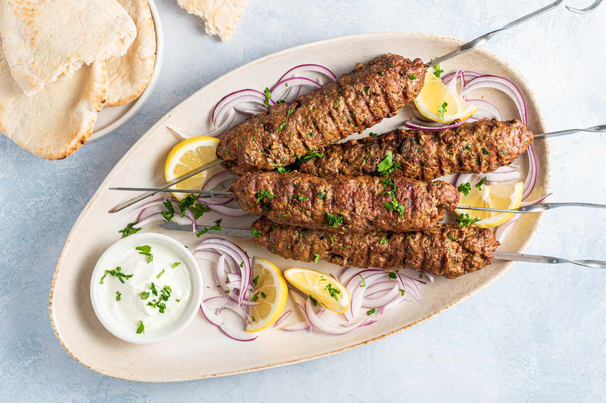
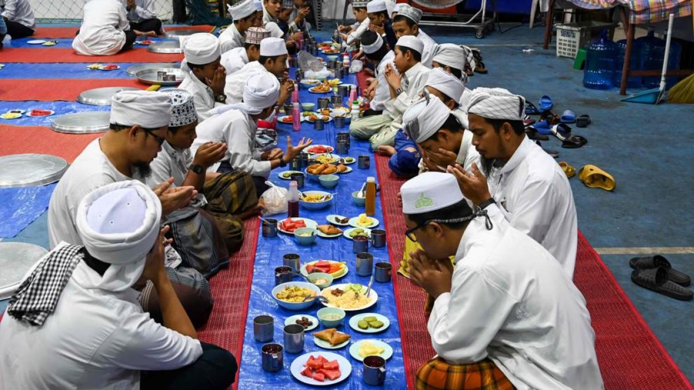
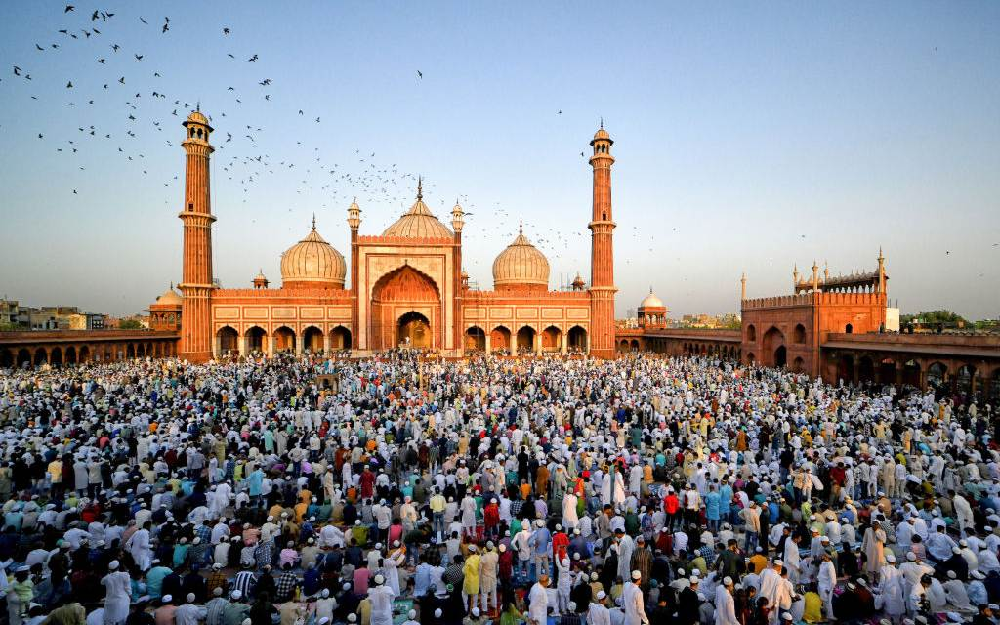
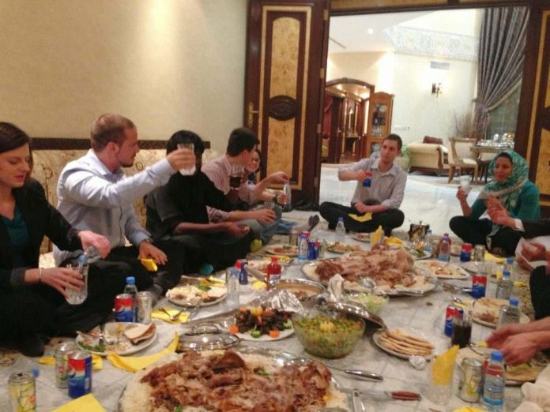

La cultura árabe tiene una rica y diversa historia que se remonta a miles de años. Los árabes han sido actores clave en la historia de Oriente Medio y África del Norte, influyendo en la ciencia, la filosofía, la literatura y el arte a lo largo de los siglos. La cultura árabe es el resultado de la mezcla de tradiciones beduinas preislámicas y las influencias del Islam, que surgió en el siglo VII en la Península Arábiga.
Gastronomía Árabe
La gastronomía árabe es conocida por su variedad de especias y sabores únicos. Platos como el kofta, el falafel y el pollo mandi son representativos de la cocina árabe. Estos platos reflejan la hospitalidad árabe y el uso de ingredientes naturales.
• El Falafel que este hecho a base garbanzos fritos con pan pita y hummus que es una crema hecha a base de garbanzos, aceite de oliva y limón o yogurt.
• Kofta que es un plato hecho a base de carne de ternera picada en cubos, se sirve con arroz y yogurt.
• Pollo Mandi, es un pollo ahumado, de cordero o pollo, que se suele cocinar en hornos subterráneos llamados “tabún”. Se suele acompañar con arroz con muchas especias, algo muy característico de los árabes.

Idioma Árabe
El árabe es uno de los idiomas más hablados en el mundo, con más de 400 millones de hablantes nativos. Se trata de una lengua semítica con múltiples dialectos, pero el árabe estándar moderno es el más utilizado en los medios de comunicación y en la escritura formal.
Escucha una muestra del idioma árabe a continuación:
En este audio podemos escuchar una introducción sobre cómo aprender y comprender la lengua árabe, dirigido especialmente a personas que no están familiarizadas con el idioma. Se utilizan frases cotidianas en árabe para mostrar ejemplos de comunicación y conversación básica.
Vestimenta Tradicional Árabe
La vestimenta árabe varía según la región, pero comúnmente se usan prendas como la "abaya" para las mujeres y la "thobe" para los hombres. Estas prendas no solo cumplen con estándares religiosos, sino que también protegen contra el clima cálido del desierto.
Tradiciones y Costumbres
Las tradiciones árabes están profundamente arraigadas en el respeto por la familia, la hospitalidad y los rituales religiosos. Las festividades como el Ramadán y el Eid al-Fitr son eventos clave en la vida cultural árabe.
• El ramadán es el noveno mes del calendario islámico, respetado por musulmanes como el mes del ayuno, oración, reflexión y comunidad.
• Eíd al Fitr, Fiesta del Fin del Ayuno o Fiesta de la Ruptura del Ayuno, es una festividad religiosa de la tradición islámica.
• La hospitalidad proviene de la voluntad de acoger y alimentar a los viajeros del desierto que pasaban por la ciudad. El objetivo último de la hospitalidad árabe es honrar al visitante, romper el hielo y eliminar la “incomodidad” y el nerviosismo asociados al encuentro con un extraño .



Música Árabe
La música árabe es rica en melodías complejas y ritmos únicos. Instrumentos tradicionales como el "ûd" y el "qanun" son ampliamente utilizados, y la música árabe ha influido en muchas otras culturas a lo largo de la historia.